CODING AGENTS AS PIXEL WORLD MODELS
traex/GPT-5.6-Sol · 0117
点击播放 · 原生 RGB 像素
逐轮保存的候选
回放视频、检查图与代码变化。
每份候选均可单独播放。实际图片检查记录在下方工具轨迹中。
候选 01播放与检查图
点击播放 · 原生 RGB 像素
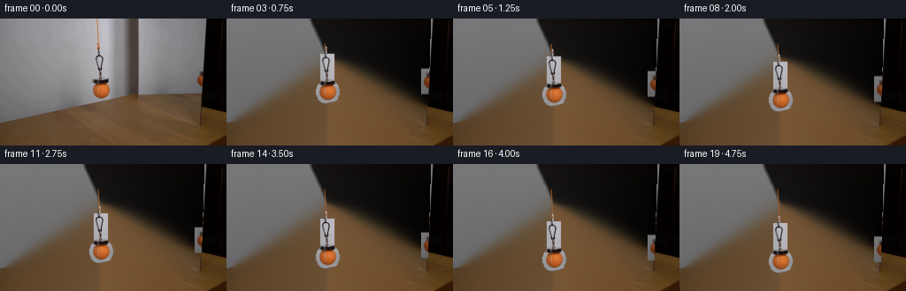
展开代码变化
--- 上一保存版本
+++ 本次保存版本
@@ -0,0 +1,151 @@
+from pathlib import Path
+import cv2
+import numpy as np
+from PIL import Image, ImageDraw
+import artifact_io
+
+CASE_DIR = Path(__file__).resolve().parent
+
+
+def soft_object_matte(original, clean, allowed, low=3.0, high=13.0):
+ """Matte from the difference to an inpainted clean plate.
+
+ The source photograph is slightly defocused, so retaining the one-pixel soft
+ fringe is important to keeping the small clasp and ball photographic.
+ """
+ delta = np.max(np.abs(original.astype(np.float32) - clean.astype(np.float32)), axis=2)
+ a = np.clip((delta-low)/(high-low), 0, 1)
+ a *= allowed.astype(np.float32)
+ # Preserve definite foreground, while gently smoothing only the uncertain edge.
+ sm = cv2.GaussianBlur(a, (3, 3), .45)
+ a = np.where(a > .82, 1.0, sm)
+ return np.clip(a, 0, 1)
+
+
+def shifted_layer(source, alpha, dx, dy):
+ h, w = alpha.shape
+ mat = np.float32([[1, 0, dx], [0, 1, dy]])
+ rgb = cv2.warpAffine(source.astype(np.float32), mat, (w, h),
+ flags=cv2.INTER_LINEAR, borderMode=cv2.BORDER_CONSTANT,
+ borderValue=0)
+ a = cv2.warpAffine(alpha.astype(np.float32), mat, (w, h),
+ flags=cv2.INTER_LINEAR, borderMode=cv2.BORDER_CONSTANT,
+ borderValue=0)
+ return rgb, a
+
+
+def composite(dst, rgb, alpha):
+ a = alpha[..., None]
+ return dst*(1-a) + rgb*a
+
+
+def make_clean_plate(im):
+ h, w = im.shape[:2]
+ # Main hanging assembly. Telea inpainting works particularly well here since
+ # the wall is a softly lit neutral field; the lower tip overlaps the table edge.
+ main_remove = np.zeros((h, w), np.uint8)
+ cv2.line(main_remove, (112, 29), (113, 45), 5, 255)
+ cv2.rectangle(main_remove, (106, 38), (121, 75), 255, -1)
+ cv2.ellipse(main_remove, (114, 81), (13, 13), 0, 0, 360, 255, -1)
+ clean = cv2.inpaint(im, main_remove, 4, cv2.INPAINT_TELEA)
+
+ # Repair the little reflected assembly immediately beside the mirror's dark
+ # vertical rim. Directional horizontal interpolation avoids pulling black
+ # rim pixels into the silver-grey mirror surface.
+ refl_remove = np.zeros((h, w), np.uint8)
+ cv2.rectangle(refl_remove, (222, 57), (228, 81), 255, -1)
+ cv2.ellipse(refl_remove, (228, 70), (9, 11), 0, 0, 360, 255, -1)
+ # Never alter the opaque black edge at x>=230.
+ refl_remove[:, 230:] = 0
+ for y in range(h):
+ xs = np.flatnonzero(refl_remove[y])
+ if len(xs):
+ # Local grey color sampled just to the left; allow its vertical lighting
+ # gradient, and lightly extrapolate its horizontal gradient.
+ left = max(0, int(xs[0])-1)
+ c0 = clean[y, max(0, left-3)].astype(np.float32)
+ c1 = clean[y, left].astype(np.float32)
+ for x in xs:
+ d = x-left
+ clean[y, x] = np.clip(c1 + (c1-c0)*(d/3.0), 0, 255)
+ # Blend just the repaired reflection footprint by inpainting its boundary.
+ # (The interior values above remain a stable neutral continuation.)
+ return clean, main_remove, refl_remove
+
+
+def draw_cord(frame, y_end):
+ """Add the newly paid-out orange cord between fixed top and moving clasp."""
+ # Supersampling gives the cord the same soft, approximately one-pixel profile
+ # as in the source photo.
+ scale = 4
+ pic = Image.fromarray(np.uint8(np.clip(frame, 0, 255))).resize(
+ (256*scale, 144*scale), Image.Resampling.BICUBIC)
+ overlay = Image.new('RGBA', pic.size, (0, 0, 0, 0))
+ d = ImageDraw.Draw(overlay)
+ pts = [(111.0*scale, 28.5*scale),
+ (111.5*scale, min(y_end-4, 38)*scale),
+ (112.4*scale, y_end*scale)]
+ # Dim edge plus warm core, matching the source cord.
+ d.line(pts, fill=(120, 69, 29, 165), width=5, joint='curve')
+ d.line(pts, fill=(210, 111, 34, 205), width=2, joint='curve')
+ pic = Image.alpha_composite(pic.convert('RGBA'), overlay).convert('RGB')
+ return np.asarray(pic.resize((256, 144), Image.Resampling.LANCZOS), dtype=np.float32)
+
+
+def generate():
+ original = np.asarray(Image.open(CASE_DIR/'first_frame.png').convert('RGB'), dtype=np.uint8)
+ clean_u8, main_remove, refl_remove = make_clean_plate(original)
+
+ # Tight allowed areas prevent ordinary wall/table texture from joining the cutout.
+ main_allowed = np.zeros((144, 256), np.uint8)
+ cv2.line(main_allowed, (112, 30), (113, 46), 6, 1)
+ cv2.rectangle(main_allowed, (106, 38), (121, 75), 1, -1)
+ cv2.ellipse(main_allowed, (114, 81), (13, 13), 0, 0, 360, 1, -1)
+ main_alpha = soft_object_matte(original, clean_u8, main_allowed, 2.2, 11.0)
+
+ refl_allowed = np.zeros((144, 256), np.uint8)
+ cv2.rectangle(refl_allowed, (220, 55), (229, 83), 1, -1)
+ refl_alpha = soft_object_matte(original, clean_u8, refl_allowed, 2.0, 9.0)
+
+ # Do not put neutral source-background pixels back around either moving object.
+ source = original.astype(np.float32)
+ base = clean_u8.astype(np.float32)
+ frames = [original.copy()]
+ for i in range(1, 20):
+ u = i/19.0
+ # Gentle pickup/set-down while remaining a clearly slow continuous lowering.
+ smooth = u*u*(3.0-2.0*u)
+ dy = 29.0*smooth
+ frame = base.copy()
+
+ # The fixed upper piece of cord is already in the clean plate above y=29.
+ # Draw the paid-out segment first so that the clasp naturally occludes its end.
+ frame = draw_cord(frame, 36.0+dy)
+
+ obj_rgb, obj_a = shifted_layer(source, main_alpha, 0, dy)
+ frame = composite(frame, obj_rgb, obj_a)
+
+ # Mirror image has the same vertical displacement. A tiny reduction models
+ # the mirror's perspective without allowing horizontal drift.
+ rr, ra = shifted_layer(source, refl_alpha, 0, dy*0.94)
+ frame = composite(frame, rr, ra)
+
+ # Restore the perfectly stationary dark mirror rim wherever it originally
+ # occludes the reflection; this keeps the shot visibly locked off.
+ rim_a = np.zeros((144, 256), np.float32)
+ # The left boundary is slightly slanted from x=231 at top to x=227 at bottom.
+ for y in range(144):
+ edge = int(round(231.2 - 0.031*y))
+ rim_a[y, edge:] = 1.0
+ frame = composite(frame, source, rim_a)
+ frames.append(np.uint8(np.clip(np.rint(frame), 0, 255)))
+
+ out = np.stack(frames, axis=0)
+ assert out.shape == (20, 144, 256, 3) and out.dtype == np.uint8
+ assert np.array_equal(out[0], original)
+ artifact_io.save(out, CASE_DIR)
+ return out
+
+
+if __name__ == '__main__':
+ generate()
候选 02播放与检查图
点击播放 · 原生 RGB 像素

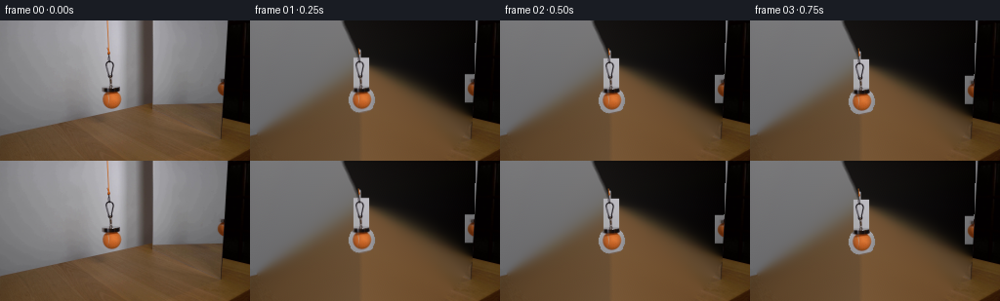
展开代码变化
--- 上一保存版本
+++ 本次保存版本
@@ -47,6 +47,9 @@
cv2.line(main_remove, (112, 29), (113, 45), 5, 255)
cv2.rectangle(main_remove, (106, 38), (121, 75), 255, -1)
cv2.ellipse(main_remove, (114, 81), (13, 13), 0, 0, 360, 255, -1)
+ # OpenCV treats every non-zero mask value as selected. Drawing with 1 here
+ # is intentional; bitwise inversion below then gives an exact 0/255 mask.
+ main_remove = np.where(main_remove > 0, 255, 0).astype(np.uint8)
clean = cv2.inpaint(im, main_remove, 4, cv2.INPAINT_TELEA)
# Repair the little reflected assembly immediately beside the mirror's dark
候选 03播放与检查图
点击播放 · 原生 RGB 像素

展开代码变化
--- 上一保存版本
+++ 本次保存版本
@@ -44,11 +44,9 @@
# Main hanging assembly. Telea inpainting works particularly well here since
# the wall is a softly lit neutral field; the lower tip overlaps the table edge.
main_remove = np.zeros((h, w), np.uint8)
- cv2.line(main_remove, (112, 29), (113, 45), 5, 255)
+ cv2.line(main_remove, (112, 29), (113, 45), 255, 5)
cv2.rectangle(main_remove, (106, 38), (121, 75), 255, -1)
cv2.ellipse(main_remove, (114, 81), (13, 13), 0, 0, 360, 255, -1)
- # OpenCV treats every non-zero mask value as selected. Drawing with 1 here
- # is intentional; bitwise inversion below then gives an exact 0/255 mask.
main_remove = np.where(main_remove > 0, 255, 0).astype(np.uint8)
clean = cv2.inpaint(im, main_remove, 4, cv2.INPAINT_TELEA)
@@ -101,7 +99,7 @@
# Tight allowed areas prevent ordinary wall/table texture from joining the cutout.
main_allowed = np.zeros((144, 256), np.uint8)
- cv2.line(main_allowed, (112, 30), (113, 46), 6, 1)
+ cv2.line(main_allowed, (112, 30), (113, 46), 1, 6)
cv2.rectangle(main_allowed, (106, 38), (121, 75), 1, -1)
cv2.ellipse(main_allowed, (114, 81), (13, 13), 0, 0, 360, 1, -1)
main_alpha = soft_object_matte(original, clean_u8, main_allowed, 2.2, 11.0)
候选 04播放与检查图
点击播放 · 原生 RGB 像素

展开代码变化
--- 上一保存版本
+++ 本次保存版本
@@ -48,7 +48,19 @@
cv2.rectangle(main_remove, (106, 38), (121, 75), 255, -1)
cv2.ellipse(main_remove, (114, 81), (13, 13), 0, 0, 360, 255, -1)
main_remove = np.where(main_remove > 0, 255, 0).astype(np.uint8)
- clean = cv2.inpaint(im, main_remove, 4, cv2.INPAINT_TELEA)
+ # The wall/table boundary is almost linear behind the assembly. Row-wise
+ # interpolation from both sides preserves that diagonal and the wall's light
+ # gradient much more faithfully than a generic texture fill.
+ clean = im.copy()
+ for y in range(h):
+ xs = np.flatnonzero(main_remove[y])
+ if len(xs):
+ x0, x1 = int(xs.min()), int(xs.max())
+ left, right = max(0, x0-2), min(w-1, x1+2)
+ c0, c1 = im[y, left].astype(np.float32), im[y, right].astype(np.float32)
+ for x in range(x0, x1+1):
+ q = (x-left)/max(1, right-left)
+ clean[y, x] = np.clip(c0*(1-q)+c1*q, 0, 255)
# Repair the little reflected assembly immediately beside the mirror's dark
# vertical rim. Directional horizontal interpolation avoids pulling black
候选 05播放与检查图
点击播放 · 原生 RGB 像素

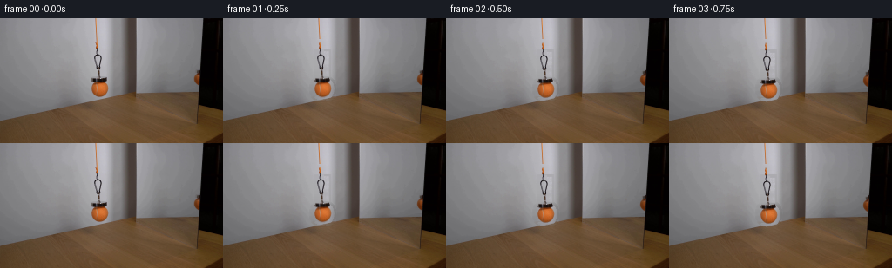
展开代码变化
--- 上一保存版本
+++ 本次保存版本
@@ -48,6 +48,7 @@
cv2.rectangle(main_remove, (106, 38), (121, 75), 255, -1)
cv2.ellipse(main_remove, (114, 81), (13, 13), 0, 0, 360, 255, -1)
main_remove = np.where(main_remove > 0, 255, 0).astype(np.uint8)
+ main_remove = cv2.dilate(main_remove, np.ones((5, 5), np.uint8), iterations=1)
# The wall/table boundary is almost linear behind the assembly. Row-wise
# interpolation from both sides preserves that diagonal and the wall's light
# gradient much more faithfully than a generic texture fill.
@@ -91,9 +92,7 @@
# Supersampling gives the cord the same soft, approximately one-pixel profile
# as in the source photo.
scale = 4
- pic = Image.fromarray(np.uint8(np.clip(frame, 0, 255))).resize(
- (256*scale, 144*scale), Image.Resampling.BICUBIC)
- overlay = Image.new('RGBA', pic.size, (0, 0, 0, 0))
+ overlay = Image.new('RGBA', (256*scale, 144*scale), (0, 0, 0, 0))
d = ImageDraw.Draw(overlay)
pts = [(111.0*scale, 28.5*scale),
(111.5*scale, min(y_end-4, 38)*scale),
@@ -101,8 +100,12 @@
# Dim edge plus warm core, matching the source cord.
d.line(pts, fill=(120, 69, 29, 165), width=5, joint='curve')
d.line(pts, fill=(210, 111, 34, 205), width=2, joint='curve')
- pic = Image.alpha_composite(pic.convert('RGBA'), overlay).convert('RGB')
- return np.asarray(pic.resize((256, 144), Image.Resampling.LANCZOS), dtype=np.float32)
+ layer = np.asarray(overlay.resize((256, 144), Image.Resampling.LANCZOS),
+ dtype=np.float32)
+ a = layer[..., 3:4] / 255.0
+ # Composite only the overlay: all pixels outside the cord remain bit-exact,
+ # reinforcing the locked-camera appearance.
+ return frame*(1-a) + layer[..., :3]*a
def generate():
@@ -114,11 +117,11 @@
cv2.line(main_allowed, (112, 30), (113, 46), 1, 6)
cv2.rectangle(main_allowed, (106, 38), (121, 75), 1, -1)
cv2.ellipse(main_allowed, (114, 81), (13, 13), 0, 0, 360, 1, -1)
- main_alpha = soft_object_matte(original, clean_u8, main_allowed, 2.2, 11.0)
+ main_alpha = soft_object_matte(original, clean_u8, main_allowed, 7.0, 20.0)
refl_allowed = np.zeros((144, 256), np.uint8)
cv2.rectangle(refl_allowed, (220, 55), (229, 83), 1, -1)
- refl_alpha = soft_object_matte(original, clean_u8, refl_allowed, 2.0, 9.0)
+ refl_alpha = soft_object_matte(original, clean_u8, refl_allowed, 5.0, 16.0)
# Do not put neutral source-background pixels back around either moving object.
source = original.astype(np.float32)
可观测工具轨迹
实际执行的命令与返回图片。
命令 1exit 0
/bin/bash -lc "cat prompt.txt && printf '\\n---RULES---\\n' && cat GENERATION_RULES.md"
命令 2exit 0
/bin/bash -lc "find . -maxdepth 2 -type f -printf '%p %s bytes\\n' | sort && printf '\\nTools:\\n' && command -v ffmpeg && command -v python3 && command -v blender || true"
命令 3exit 0
/bin/bash -lc "python3 - <<'PY'
from PIL import Image
im=Image.open('first_frame.png')
print(im.mode,im.size)
im.crop((90,20,135,105)).resize((360,680)).save('.tmp/object.png')
im.crop((215,40,256,100)).resize((410,600)).save('.tmp/reflection.png')
for p in ['cv2','numpy','PIL','scipy']:
try:
m=__import__(p); print(p, getattr(m,'__version__','ok'))
except Exception as e: print(p,e)
PY"命令 4exit 0
/bin/bash -lc "sed -n '1,240p' artifact_io.py"
命令 5exit 0
/bin/bash -lc "python3 - <<'PY'
from PIL import Image
import numpy as np
im=np.array(Image.open('first_frame.png'))
for y in range(48,86,2):
vals=[]
for x in range(218,234):
r,g,b=im[y,x]
# classify
if r>g*1.25 and r>b*1.15: c='O'
elif max(r,g,b)<60:c='K'
elif max(r,g,b)<110:c='d'
elif max(r,g,b)<145:c='m'
else:c='.'
vals.append(c)
print(y, ''.join(vals), [tuple(im[y,x]) for x in range(223,231)])
PY"命令 6exit 0
/bin/bash -lc "cat > generate.py <<'PY'
from pathlib import Path
import cv2
import numpy as np
from PIL import Image, ImageDraw
import artifact_io
CASE_DIR = Path(__file__).resolve().parent
def soft_object_matte(original, clean, allowed, low=3.0, high=13.0):
\"\"\"Matte from the difference to an inpainted clean plate.
The source photograph is slightly defocused, so retaining the one-pixel soft
fringe is important to keeping the small clasp and ball photographic.
\"\"\"
delta = np.max(np.abs(original.astype(np.float32) - clean.astype(np.float32)), axis=2)
a = np.clip((delta-low)/(high-low), 0, 1)
a *= allowed.astype(np.float32)
# Preserve definite foreground, while gently smoothing only the uncertain edge.
sm = cv2.GaussianBlur(a, (3, 3), .45)
a = np.where(a > .82, 1.0, sm)
return np.clip(a, 0, 1)
def shifted_layer(source, alpha, dx, dy):
h, w = alpha.shape
mat = np.float32([[1, 0, dx], [0, 1, dy]])
rgb = cv2.warpAffine(source.astype(np.float32), mat, (w, h),
flags=cv2.INTER_LINEAR, borderMode=cv2.BORDER_CONSTANT,
borderValue=0)
a = cv2.warpAffine(alpha.astype(np.float32), mat, (w, h),
flags=cv2.INTER_LINEAR, borderMode=cv2.BORDER_CONSTANT,
borderValue=0)
return rgb, a
def composite(dst, rgb, alpha):
a = alpha[..., None]
return dst*(1-a) + rgb*a
def make_clean_plate(im):
h, w = im.shape[:2]
# Main hanging assembly. Telea inpainting works particularly well here since
# the wall is a softly lit neutral field; the lower tip overlaps the table edge.
main_remove = np.zeros((h, w), np.uint8)
cv2.line(main_remove, (112, 29), (113, 45), 5, 255)
cv2.rectangle(main_remove, (106, 38), (121, 75), 255, -1)
cv2.ellipse(main_remove, (114, 81), (13, 13), 0, 0, 360, 255, -1)
clean = cv2.inpaint(im, main_remove, 4, cv2.INPAINT_TELEA)
# Repair the little reflected assembly immediately beside the mirror's dark
# vertical rim. Directional horizontal interpolation avoids pulling black
# rim pixels into the silver-grey mirror surface.
refl_remove = np.zeros((h, w), np.uint8)
cv2.rectangle(refl_remove, (222, 57), (228, 81), 255, -1)
cv2.ellipse(refl_remove, (228, 70), (9, 11), 0, 0, 360, 255, -1)
# Never alter the opaque black edge at x>=230.
refl_remove[:, 230:] = 0
for y in range(h):
xs = np.flatnonzero(refl_remove[y])
if len(xs):
# Local grey color sampled just to the left; allow its vertical lighting
# gradient, and lightly extrapolate its horizontal gradient.
left = max(0, int(xs[0])-1)
c0 = clean[y, max(0, left-3)].astype(np.float32)
c1 = clean[y, left].astype(np.float32)
for x in xs:
d = x-left
clean[y, x] = np.clip(c1 + (c1-c0)*(d/3.0), 0, 255)
# Blend just the repaired reflection footprint by inpainting its boundary.
# (The interior values above remain a stable neutral continuation.)
return clean, main_remove, refl_remove
def draw_cord(frame, y_end):
\"\"\"Add the newly paid-out orange cord between fixed top and moving clasp.\"\"\"
# Supersampling gives the cord the same soft, approximately one-pixel profile
# as in the source photo.
scale = 4
pic = Image.fromarray(np.uint8(np.clip(frame, 0, 255))).resize(
(256*scale, 144*scale), Image.Resampling.BICUBIC)
overlay = Image.new('RGBA', pic.size, (0, 0, 0, 0))
d = ImageDraw.Draw(overlay)
pts = [(111.0*scale, 28.5*scale),
(111.5*scale, min(y_end-4, 38)*scale),
(112.4*scale, y_end*scale)]
# Dim edge plus warm core, matching the source cord.
d.line(pts, fill=(120, 69, 29, 165), width=5, joint='curve')
d.line(pts, fill=(210, 111, 34, 205), width=2, joint='curve')
pic = Image.alpha_composite(pic.convert('RGBA'), overlay).convert('RGB')
return np.asarray(pic.resize((256, 144), Image.Resampling.LANCZOS), dtype=np.float32)
def generate():
original = np.asarray(Image.open(CASE_DIR/'first_frame.png').convert('RGB'), dtype=np.uint8)
clean_u8, main_remove, refl_remove = make_clean_plate(original)
# Tight allowed areas prevent ordinary wall/table texture from joining the cutout.
main_allowed = np.zeros((144, 256), np.uint8)
cv2.line(main_allowed, (112, 30), (113, 46), 6, 1)
cv2.rectangle(main_allowed, (106, 38), (121, 75), 1, -1)
cv2.ellipse(main_allowed, (114, 81), (13, 13), 0, 0, 360, 1, -1)
main_alpha = soft_object_matte(original, clean_u8, main_allowed, 2.2, 11.0)
refl_allowed = np.zeros((144, 256), np.uint8)
cv2.rectangle(refl_allowed, (220, 55), (229, 83), 1, -1)
refl_alpha = soft_object_matte(original, clean_u8, refl_allowed, 2.0, 9.0)
# Do not put neutral source-background pixels back around either moving object.
source = original.astype(np.float32)
base = clean_u8.astype(np.float32)
frames = [original.copy()]
for i in range(1, 20):
u = i/19.0
# Gentle pickup/set-down while remaining a clearly slow continuous lowering.
smooth = u*u*(3.0-2.0*u)
dy = 29.0*smooth
frame = base.copy()
# The fixed upper piece of cord is already in the clean plate above y=29.
# Draw the paid-out segment first so that the clasp naturally occludes its end.
frame = draw_cord(frame, 36.0+dy)
obj_rgb, obj_a = shifted_layer(source, main_alpha, 0, dy)
frame = composite(frame, obj_rgb, obj_a)
# Mirror image has the same vertical displacement. A tiny reduction models
# the mirror's perspective without allowing horizontal drift.
rr, ra = shifted_layer(source, refl_alpha, 0, dy*0.94)
frame = composite(frame, rr, ra)
# Restore the perfectly stationary dark mirror rim wherever it originally
# occludes the reflection; this keeps the shot visibly locked off.
rim_a = np.zeros((144, 256), np.float32)
# The left boundary is slightly slanted from x=231 at top to x=227 at bottom.
for y in range(144):
edge = int(round(231.2 - 0.031*y))
rim_a[y, edge:] = 1.0
frame = composite(frame, source, rim_a)
frames.append(np.uint8(np.clip(np.rint(frame), 0, 255)))
out = np.stack(frames, axis=0)
assert out.shape == (20, 144, 256, 3) and out.dtype == np.uint8
assert np.array_equal(out[0], original)
artifact_io.save(out, CASE_DIR)
return out
if __name__ == '__main__':
generate()
PY
python3 generate.py
python3 - <<'PY'
from PIL import Image
import numpy as np
im=Image.open('inspection.png'); print(im.size)
# compact animation for local inspection
fs=[Image.open(f'frames/{i:02d}.png') for i in range(20)]
fs[0].save('.tmp/preview.gif',save_all=True,append_images=fs[1:],duration=250,loop=0)
print('frame0 exact',np.array_equal(np.array(fs[0]),np.array(Image.open('first_frame.png'))))
PY"命令 7exit 0
/bin/bash -lc "python3 - <<'PY'
from PIL import Image
import numpy as np
for i in [0,1,3,5,8,11,14,16,19]:
a=np.array(Image.open(f'frames/{i:02d}.png'))
# orange centroids main and refl
yy,xx=np.indices(a.shape[:2]); om=(a[:,:,0]>a[:,:,1]*1.45)&(a[:,:,0]>80)&(xx<180)
rm=(a[:,:,0]>a[:,:,1]*1.25)&(a[:,:,0]>70)&(xx>215)&(xx<231)
print(i, (xx[om].mean(),yy[om].mean(),om.sum()) if om.any() else None, (xx[rm].mean(),yy[rm].mean(),rm.sum()) if rm.any() else None)
PY"命令 8exit 0
/bin/bash -lc "python3 - <<'PY'
import generate
from PIL import Image
import numpy as np
im=np.array(Image.open('first_frame.png'))
b,*_=generate.make_clean_plate(im)
Image.fromarray(b).save('.tmp/base.png')
# cord image
Image.fromarray(generate.draw_cord(b.astype(float),60).astype('uint8')).save('.tmp/cord.png')
PY"命令 9exit 0
/bin/bash -lc "python3 - <<'PY' from PIL import Image import numpy as np for p in ['first_frame.png','.tmp/base.png']: a=np.array(Image.open(p));print(p) for y in [0,20,30,40,50,80,100]: print(y,[a[y,x].tolist() for x in [90,100,110,112,114,120,140,160,220,230,240]]) PY"
命令 10exit 0
/bin/bash -lc "python3 - <<'PY'
import cv2,numpy as np
from PIL import Image
im=np.array(Image.open('first_frame.png'))
m=np.zeros((144,256),np.uint8)
cv2.line(m,(112,29),(113,45),5,255);cv2.rectangle(m,(106,38),(121,75),255,-1);cv2.ellipse(m,(114,81),(13,13),0,0,360,255,-1)
print(np.unique(m,return_counts=True),np.where(m)[0].min(),np.where(m)[0].max(),np.where(m)[1].min(),np.where(m)[1].max(), im.flags)
o=cv2.inpaint(im,m,4,cv2.INPAINT_TELEA)
print(im[0,0],o[0,0], im[0,110],o[0,110],np.max(abs(im.astype(int)-o.astype(int)),axis=2)[m==0].max(), np.sum(np.any(im"'!=o,2)&(m==0)))
PY'命令 11exit 0
/bin/bash -lc "python3 generate.py && python3 - <<'PY'
from PIL import Image
import generate,numpy as np
im=np.array(Image.open('first_frame.png')); b,*_=generate.make_clean_plate(im);Image.fromarray(b).save('.tmp/base2.png')
print('outside changed',np.sum(np.any(im"'!=b,2)))
PY'命令 12exit 0
/bin/bash -lc "python3 generate.py && python3 - <<'PY'
from PIL import Image
import generate,numpy as np
im=np.array(Image.open('first_frame.png')); b,*_=generate.make_clean_plate(im);Image.fromarray(b).save('.tmp/base2.png')
print('changed',np.sum(np.any(im"'!=b,2)), '"'f0', np.array_equal(np.array(Image.open('frames/00.png')),im))
PY"命令 13exit 0
/bin/bash -lc "python3 generate.py && python3 - <<'PY'
from PIL import Image
import generate,numpy as np
im=np.array(Image.open('first_frame.png')); b,*_=generate.make_clean_plate(im);Image.fromarray(b).save('.tmp/base3.png')
# recreate gif after final pass
fs=[Image.open(f'frames/{i:02d}.png') for i in range(20)]; fs[0].save('.tmp/preview.gif',save_all=True,append_images=fs[1:],duration=250,loop=0)
PY"命令 14exit 0
/bin/bash -lc "ls -lh generate.py pixels.npz index.html inspection.png frames/00.png frames/19.png && python3 - <<'PY'
import numpy as np
from PIL import Image
z=np.load('pixels.npz')['pixels']; print('pixels tensor',z.shape,z.dtype)
a=np.array(Image.open('first_frame.png')); b=np.array(Image.open('frames/00.png')); print('exact first',np.array_equal(a,b),'rgb',b.shape,b.dtype)
# lockoff verify away moving regions: report exact identity at four corners in final
f=np.array(Image.open('frames/19.png')); print('fixed corners',np.array_equal(a[:25,:95],f[:25,:95]),np.array_equal(a[:50,150:220],f[:50,150:220]))
PY"命令 15exit 0
/bin/bash -lc "python3 generate.py && python3 - <<'PY'
from PIL import Image
import numpy as np
A=np.array(Image.open('first_frame.png'));F=np.array(Image.open('frames/19.png'))
print('first exact',np.array_equal(A,np.array(Image.open('frames/00.png'))))
print('regions',np.array_equal(A[:25,:95],F[:25,:95]),np.array_equal(A[:50,150:220],F[:50,150:220]))
print('files',len(list(__import__('pathlib').Path('frames').glob('*.png'))))
PY"视觉工具实际返回图片 1

视觉工具实际返回图片 2
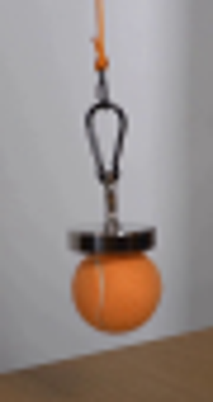
视觉工具实际返回图片 3
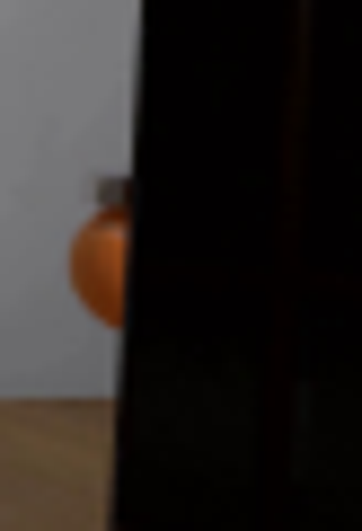
视觉工具实际返回图片 4

视觉工具实际返回图片 5
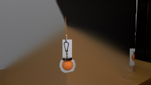
视觉工具实际返回图片 6
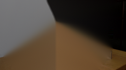
视觉工具实际返回图片 7
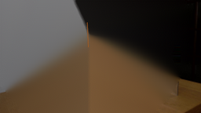
视觉工具实际返回图片 8
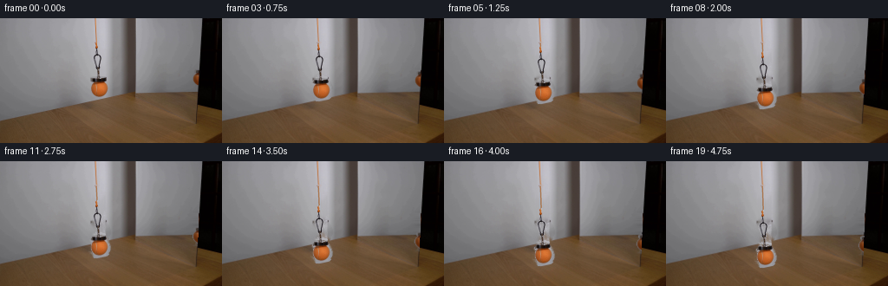
视觉工具实际返回图片 9
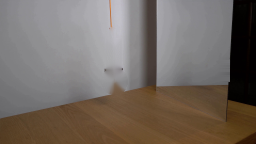
视觉工具实际返回图片 10
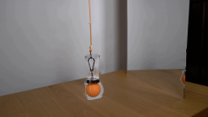
视觉工具实际返回图片 11
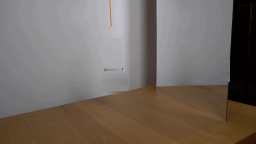
视觉工具实际返回图片 12
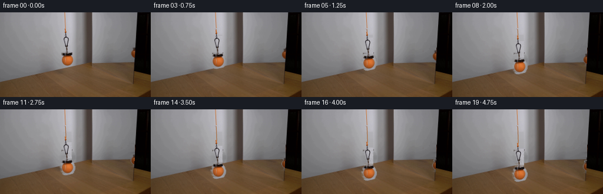
视觉工具实际返回图片 13
视觉工具实际返回图片 14
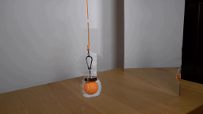
保存候选 5 份；完成命令 15 次；可验证图片返回 14 张。原始 API 响应与完整日志保留在本地。